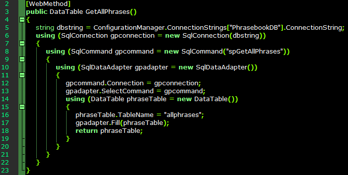
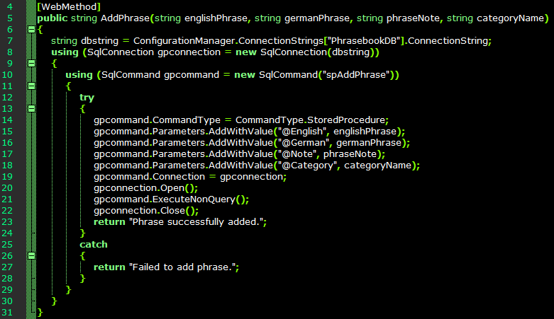

SQL Server CE Setup
CE should have been installed as part of SQL Server Express, but you'll require the assembly references if developing a Windows application that uses an embedded database. The CE server wasn't listed anywhere on my laptop, and I couldn't use it without knowing the connection string or name. There is a command for getting information about the local SQL Server configuration, though:
sqllocaldb.exe info
For my project I chose the MSSQLLocalDB instance, and started that using the following command:
sqllocaldb.exe start MSSQLLocalDB
Then got information about it using:
sqllocaldb.exe info MSSQLLocalDB
The Command Prompt returns information about the server. From this, we need the server name, and possibly the instance pipe name.
Creating a Database and Table
Now we want to create a database and at least one table. Databases can be administrated in Visual Studio's the SQL Server Object Explorer, but I find it easier to work with SQL Server Management Studio.
To connect the SQL Server Management Studio to the local server, enter '(localdb)\MSSQLLocalDB' as the Server name. The Object Explorer will list the features available for the database server, and it's here that tables, views and stored procedures can be created.
Right-click and select 'Generate Change Script...', if you want to save the SQL code for replicating the schema to additional tables. It isn't obvious how to commit the changes to the database, though - to do this, right-click the current tab, and select 'Save Table_1'.
Table rows can be added and modified by selecting 'Edit Top 200 Rows', if you're not versed in MS SQL scripting.
Adding Reference Assemblies to a Project
The chances are SQL Server CE was already installed along with Visual Studio, but the DLLs must be dowloaded and installed to enable the addition of the assembly references to a project. After installation, you might need to browse for the DLLs in Reference Manager. They should be stored in 'C:\Program Files\Microsoft SQL Server Compact Edition\v4.0\Desktop'. From this you'll want the assembly reference for System.Data.SqlServerCe.dll, and the following import statement in the code:
using System.Data.SqlServerCe;
Since I'm only testing this as a data source, I've created a basic Windows Form with a DataGridView element. After creating a connection to (localdb)\MSSQLLocalDB) in the Data Source Configuration Wizard, I used the database as the data grid's source.
This adds a connection string to the project, and we can select the table/view to be displayed in the data grid.
private void Form1_Load(object sender, EventArgs e)
{
this.allphrasesTableAdapter.Fill(this.phrasesDataSet.allphrases);
}
And we can add several text boxes and a button to update the database table.
private void button2_Click(object sender, EventArgs e)
{
// Insert new record
this.allphrasesTableAdapter.Insert(00, txtEnglish.Text, txtGerman.Text, txtNote.Text, cmbPhraseCategory.Text);
}
Creating Web Services for Stored Procedures
In the last post I described how to get started with using SQL Server Compact Edition in Visual Studio, with a database and table accessible in SQL Server Object Explorer. From that point it's possible to develop an application that sends query commands to the database server, but that could allow for arbitrary query execution if the traffic between the application and server was being forged, or if a vulnerability in the application was exploited. It's a good idea to use something like stored procedures and Web Services to decouple the database from the application.
A Web Service consists essentially of those three things: A connection string, a Web Service method and the base classes in System.Web.Services. The Web Service (ASMX) template is provided in Visual Studio 2015 and is added as an item to an existing ASP.NET project. This will create an empty Web Service class file, assembly references and import statements.
Like any database application, the Web Service requires a connection string for the database server, and this can be acquired in the SQL Server Object Explorer. The Web.config file should include a connectionStrings section that contains the connection string.
A WebMethod instantiates the SqlConnection and implements a SqlCommand. Although it's possible to pass a conventional SQL command to the database server, it's better to call a stored procedure instead. In the example below I've placed 'spGetAllPhrases' into the SqlCommand function.

Stored Procedures
In the database, I now need a stored procedure called 'spGetAllPhrases' that returns all records from a table:
SET ANSI_NULLS ON
GO
SET QUOTED_IDENTIFIER ON
GO
CREATE PROCEDURE spGetAllPhrases
AS
SELECT * FROM [dbo].[allphrases]
GO
With the stored procedure added, I've checked again to ensure SqlCommand refers to it:
using (SqlCommand cmd = new SqlCommand("spGetAllPhrases"));
So far I've added a very basic Web Service and stored procedure combination. The chances are we could need Web Services that passes input parameters from a client that requests only records matching whatever criteria.
The first thing we need is to translate this requirement into a stored procedure. Here the stored procedure queries the database table for records with a given Category value:
SET ANSI_NULLS ON
GO
SET QUOTED_IDENTIFIER ON
GO
CREATE PROCEDURE spGetPhrasesByCategory @Category VarChar(50)
AS
SELECT * FROM [dbo].[allphrases] WHERE Category LIKE @Category
GO
When the stored procedure is executed, it will request the input parameter, which in this case is @Category, and return the results of the query. Now we need to create a Web Service method that gets and passes the Category variable to the stored procedure as an input variable.
Here, GetPhraseByCategory() is returned as a DataTable, as with the other Web Methods, and like the other Web Methods, the data table is populated by whatever's returned by the stored procedure.
The difference here is we declare categoryName as the method's input string - when the ASMX file is launched and the method is called, it will expect the client to supply a value for this. This variable is used as the stored procedure's @Category parameter.
When using a browser to launch the Web Service, results are presented as an XML document.
Adding Records
A Web Service can also update a database table through a stored procedure created to accept input parameters. These parameters and their data types are defined after the stored procedure name.
CREATE PROCEDURE spAddPhrase @English VarChar(200), @German VarChar(200), @Note VarChar(200), @Category VarChar(50)
AS
BEGIN
SET NOCOUNT ON;
INSERT INTO [dbo].[allphrases] (English, German, Note, Category)
VALUES (@English, @German, @Note, @Category)
END
After running the stored procedure to check it works, it's time to add a Web Method that calls and passes the variables to it.

This time we declare the method as 'public string' since we only need to return a message string telling the client whether the execution was successful.